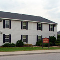

|  |
Gartland Commons
Built in 1985
Sophomore residence |
Built in 1985, Gartland Commons consist of fifty-two apartments in four separate buildings that house a total of 306 students. Each apartment provides a living room, bathroom, three bedrooms, a fully equipped kitchen, nearby recreational facilities, and a beautiful view overlooking the Hudson River.
Gartland Commons are named after John J. Gartland, Jr., a longtime Marist College Benefactor, Board Member, and Advisor. John Gartland served in the U.S. Army Air Force during World War II later earned a bachelor's of science degree from Georgetown University in 1935. After, Gartland earned law degrees from Fordham and St. John's. Marist College awarded Gartland with a doctorate in humane letters in 1980. Gartland served on the boards of numerous local organizations including Marist, the Astor Home, New York Archdiocese Catholic Charities and St. Mary's Church. In addition, Gartland was also honored by the pope as a Knight of the Holy Sepulchre, one of the highest honors the church can bestow on a lay person.